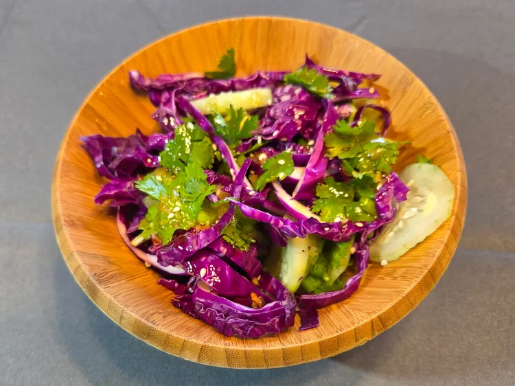

Add olive oil, toasted sesame oil, rice vinegar, sugar, soy sauce, ginger paste, garlic paste, salt, chili paste, and sesame seeds to a jar with a lid. Whisk together and then cover. Store in the refrigerator until ready for use.
Place cabbage, cucumber, green onions, and cilantro in a bowl. Toss and then drizzle dressing over by teaspoons. Toss and taste before adding more dressing.